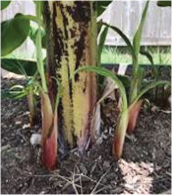
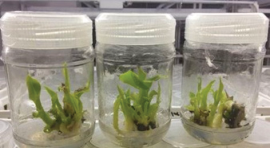

are tissue culture seedlings and suckers. Tissue culture seedlings (plantlets)
are propagated in controlled laboratory environments before being moved to
nurseries for hardening-off before sale (refer to Figure 2.2 (b)). The advantages
of using tissue culture seedlings include eliminating disease risks (as they are
free from diseases), producing a uniform banana crop, and being a fast method of
massive planting material multiplication and higher yields. They can be sourced
from registered nurseries by the government to sell tissue culture seedlings,
such as the Tanzania Agricultural Research Institute (TARI), Sokoine University
of Agriculture (SUA), and other reputable agricultural research and training
institutes. Most smallholder farmers commonly use sword suckers. They are
narrow-leaved shoots about 1 meter tall and have an average of 15 cm diameter
(Figure 2.2 (a)) in the lower part. They are sourced from existing banana fields
and must be treated with hot water to eliminate nematodes and banana weevils.
This process involves the following steps:
(i)
Trimming all the roots;
(ii) Cutting off 1 cm of tissue around the corm with a sharp knife until clean
white tissue is obtained;
(iii) Prepare hot water; and
(iv) Dip the trimmed corm in the hot water bath at 50 - 55 ºC for 20 minutes.
Under a field situation where there is no thermometer, the suckers can
be dipped in boiling water for 30 seconds.

Figure 2.2 (a): Sword suckers


Figure 2.2 (b): Tissue culture banana
seedlings
Source: https://agritech.tnau.ac.in/bio-tech/biotech_tc_jainirrigation.html